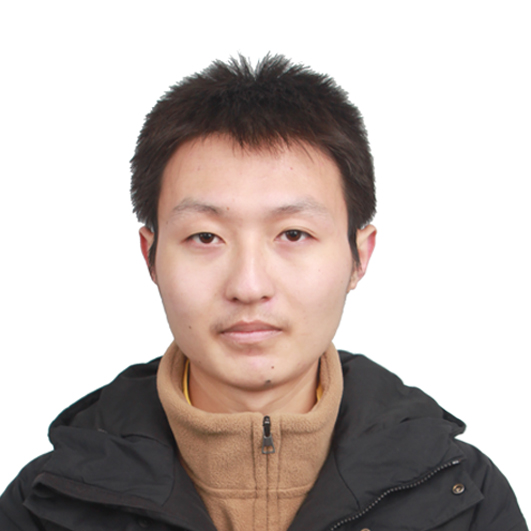

Chen-Lin Zhang,
Ph.D., Moonshot AI, Beijing
e-mail: zclnjucs@gmail.com.
I'm a research scientist in the Seed Vision Group, ByteDance.
From Feb. 2024 to Feb. 2025, I was an Multimodal Staff at Moonshot AI.
From Dec. 2021 to Jan. 2024, I was an Algorithm Researcher at 4Paradigm.
Before my industry career, I received my B.Sc. degree in Computer Science and Technology in June 2016 from Nanjing University.
I obtained my Ph.D. degree in Dec 2021, under the supervision of Prof Jianxin Wu, and I was in the LAMDA Group.
From Dec. 2019 to Dec. 2020, I was visiting Dr. Yin Li's group.
We are hiring highly motivated interns/full-time algorithm engineers and researchers, please contact me for more details!
My research interests include: Computer Vision and Machine Learning. Currently, I'm focused on:
Unified Multimodal Understanding and Generation.
Video related LLM. Especially temporal localization related Video-LLM.
Resource Constrained Deep Learning in computer vision tasks.
Z. Yang, H. Li, M. Hong, C.-L. Zhang, J. Li, S. Liu. Single Image Rolling Shutter Removal with Diffusion Models. Accepted By AAAI 2025. [paper]
S. Guo, L. Sui, C.-L. Zhang, Z. Chen, W. Yang, L. Duan. A Unified Image Compression Method for Human Perception and Multiple Vision Tasks. Accepted in ECCV 2024. [paper]
F. Hu, C.-L. Zhang, J. Guo, X.-S. Wei, L. Zhao, A. Xu and L. Gao. An Asymmetric Augmented Self-Supervised Learning Method for Unsupervised Fine-Grained Image Hashing. Accepted By CVPR 2024. [paper]
T. Zhou, H. Li, Z. Wang, Ao Luo, C.-L. Zhang, J. Li, B. Zeng and S. Liu. RecDiffusion: Rectangling for Image Stitching with Diffusion Models. Accepted By CVPR 2024. [paper]
S. Liu, C.-L. Zhang, C. Zhao and B. Ghanem. End-to-End Temporal Action Detection with 1B Parameters Across 1000 Frames. Accepted By CVPR 2024. [paper] [code page]
L. Sui, C.-L. Zhang, L. Gu, F. H. Minimum Efforts to Build an End-to-End Spatial-Temporal Action Detector. In Proceedings of the IEEE/CVF Winter Conference on Applications of Computer Vision (WACV’23), Waikola, HI, USA. pp. 5999-6008. [paper]
C.-L. Zhang, J. Wu and Y. Li. ActionFormer: Localizing Moments of Actions with Transformers. In Proceedings of the 17th European Conference on Computer Vision (ECCV’22), Tel Aviv, Isreal. LNCS 13664, pp. 492-510. [paper] [code page]
L. Sui, C.-L. Zhang and J. Wu. Salvage of Supervision in Weakly Supervised Detection. In Proceedings of the IEEE Conference on Computer Vision and Pattern Recognition (CVPR 2022), New Orleans, LA, USA. pp. 14227-14236. [paper] [code page]
R. Xu, C.-L. Zhang, P.-C. Wang, J. Lee, S. Mitra, S. Chaterji, Y. Li, S. Bagchi. ApproxDet: Content and Contention-Aware Approximate Object Detection for Mobiles. In Proceedings of the 18th ACM Conference on Embedded Networked Sensor Systems (SenSys 20). [code page]
C.-L. Zhang, Y.-H. Cao and J. Wu. Rethinking the Route Towards Weakly Supervised Object Localization. In Proceedings of the IEEE Conference on Computer Vision and Pattern Recognition (CVPR 2020), Seattle, WA (Virtual), USA. pp. 13460-13469. [paper] [code page]
*X.-S. Wei, *C.-L. Zhang, L.-Q. Liu, J. Wu and C. Shen. Coarse-to-fine: A RNN-based hierarchical attention model for vehicle re-identification. In Proceedings of the 14th Asian Conference on Computer Vision (ACCV 2018), Perth, Australia, LNCS 11362, pp. 575-591. [paper] [code page]
C.-L. Zhang, J.-H. Luo, X.-S. Wei and J. Wu. In Defense of Fully Connected Layers in Visual Representation Transfer. In Proceedings of the 18th Pacific-Rim Conference on Multimedia (PCM 2017), Harbin, China, 2017, LNCS 10736. pp, 807-817. [paper]
*X.-S. Wei, *C.-L. Zhang, Y. Li, C.-W. Xie, J. Wu, C. Shen and Z.-H. Zhou. Deep Descriptor Transforming for Image Co-Localization. In Proceedings of the 26th International Joint Conference on Artificial Intelligence (IJCAI 2017), Melbourne, Australia, pp. 3048-3054. [paper] [code page]
C.-L. Zhang, H. Zhang, X.-S. Wei and J. Wu. Deep Bimodal Regression for Apparent Personality Analysis. In Proceedings of the 14th European Conference on Computer Vision (ECCV’16) Workshops, Amsterdam, The Netherlands, 2016, LNCS 9913, pp. 311-324.[paper] [code]
L. Sui, C.-L. Zhang and J. Wu. Salvage of Supervision in Weakly Supervised Object Detection and Segmentation. Accepted by IEEE Transactions on Pattern Analysis and Machine Intelligence. In press. [code page]
C.-L. Zhang, Y. Li and J. Wu. Weakly Supervised Foreground Learning for Weakly Supervised Localization and Detection. Accepted by Pattern Recognition. In press. [paper]
C.-L. Zhang and J. Wu. Improving CNN Linear Layers with Power Mean Non-Linearity. Pattern Recognition, 2019, 89: 12-21. [paper]
*X.-S. Wei, *C.-L. Zhang, J. Wu, C. Shen and Z.-H. Zhou. Unsupervised Object Discovery and Co-Localization by Deep Descriptor Transformation. Pattern Recognition, 2019, 88: 113-126. [paper] [code page] [project page]
*X.-S. Wei, *C.-L. Zhang, H. Zhang and J. Wu. Deep Bimodal Regression of Personality Traits from Short Video Sequences. IEEE Transactions on Affective Computing (TAC), 2018, 9(3): 303-315. [paper] [code] [project page]
G.-B Zhou, J.-X. Wu, C.-L. Zhang and Z.-H. Zhou. Minimal gated unit for recurrent neural networks. International Journal of Automation and Computing, 2016, 13(3): 226-234. [code]
C.-L. Zhang. Researches on Visual Localization Tasks with Limited Labels.
First Place in EPIC-Kitchens Action Recognition, Action Detection, and Audio-Based Interaction Detection tasks/First Place in Moment Queries task of the Ego4D 2024 Challenge as the Team Leader.
First Place in EPIC-Kitchens 2023 Action Detection Challenges (in association with CVPR 2023) as the Team Leader.
Second Place in EPIC-Kitchens 2021/2022 Action Detection Challenges (in association with CVPR 2021/2022) as the Team Leader.
Scholarship Awardee selected by China Scholarship Council (CSC), 2019.
A gold medal (the 6th place of all 2,293 teams) in the competition of Nature Conservancy Fisheries Monitoring (kaggle), 2017.
Presidential Special Scholarship for first year Ph.D. Student in Nanjing University, 2016
First place in Apparent Personality Analysis (in association with ECCV 2016) as the Team Leader. [Project Page]
ACM/ICPC Asia Regional Contest Silver Medal, 2014 & 2015.
CVPR 2020~2025, ECCV 2020/2022/2024, ICCV 2021/2023, WACV 2023
IJCAI 2021/2022/2023/2025 (SPC), AAAI 2019/2021, Neurips 2021~2024, ICLR 2021~2025
ACM/ICPC Team Assistant Coach, Nanjing University
Teaching Assistant For Pattern Recognition 2018
Teaching Assistant For Basics of Programming. (For undergraduate students in Institute of Artificial Intelligence, 2018)